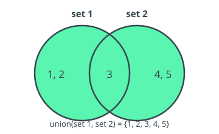
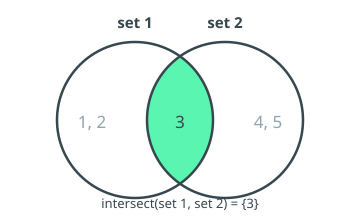
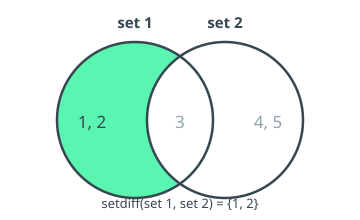
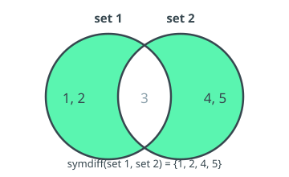

13 Set Operators¶
Set Operators construct and combine Scalar Sets (see §2.2.2). A Scalar Set is an unordered, duplicate-free collection of Scalar values that share a single Data Type. Until now, Scalar Sets could only be written as literals ({v1, v2, ...}, or {} for the empty set) or obtained from a Subcategory, and were consumed only by the in Operator (§5.8). The Operators in this section make Scalar Sets first-class:
set_ofderives a Scalar Set from the Fact Component of a Recordset.union,intersect,setdiffandsymdiffcombine Scalar Sets.
The cardinality of a Scalar Set (its number of distinct elements) is obtained with the count Operator (§7.3), which accepts a scalar_set in addition to a Recordset.
Each combining Operator (union, intersect, setdiff, symdiff) is illustrated below with a Venn diagram of two example sets, set 1 = {1, 2, 3} and set 2 = {3, 4, 5}, in which the shaded region marks the elements that end up in the result.
A set-valued expression — a literal, a Subcategory, a set-* Parameter, or the result of any Operator in this section — may appear as the right-hand side of in, as the Operand of count, as an Operand of the binary and variadic set Operators (so they nest freely, e.g. union(set_of(A), setdiff(B, C))), and as an Operand of the equality Operators = and != (see Set Equality).
Where a set Operand is written as a Recordset or Subcategory selection, it is implicitly read as the Scalar Set of its values — equivalent to wrapping it in set_of (§13.2). So union({tC_28.00, c020}[get qINC], {tC_29.00, c0030}[get qINC]) is accepted directly, without an explicit set_of around each selection.
These are semantic rules, not syntactic ones: the grammar accepts an ordinary expression in every set position, and semantic analysis is responsible for the type restrictions. In particular, set-valued expressions are not Scalars or Recordsets, so — apart from set equality — they cannot be combined with scalar/recordset Operators: arithmetic and the ordering comparisons (<, >, <=, >=) are not defined on Scalar Sets, and a comparison such as {c020} = setdiff(A, B) (a Recordset against a Scalar Set) is rejected by semantic analysis even though it parses.
13.1 Set Operators' General Behaviour¶
13.1.1 Syntax¶
setOperator ( s1, s2 {, s3}* )
13.1.2 Input Parameters¶
s1, s2, ...: scalar_set <> | subcategory | rset <>
13.1.3 Output¶
scalar_set <T>
13.1.4 Semantics¶
The binary and variadic set Operators combine their Operands into a new Scalar Set. Membership is decided element-wise using the equality Operator (=), so two elements are "the same" exactly when they compare equal under =; for intervals, this inherits the interval semantics of = (see §5.2). The result is always a Scalar Set: unordered and duplicate-free.
13.1.5 Additional Constraints¶
- All elements within a Scalar Set must share a single Data Type, considering implicit casting.
- For a binary or variadic set Operator, the Operands must have compatible element Data Types. The element Data Type of the result is the maximum common Data Type of the Operands, determined by the implicit casting hierarchy (§2.3.2) — e.g. combining an Integer set with a Number set yields a Number set.
- A Subcategory Operand is implicitly treated as a Scalar Set of its member items, consistently with the
inOperator (§5.8). - A Recordset Operand is implicitly treated as the Scalar Set of its Fact Component values, exactly as if wrapped in
set_of(§13.2). To take the set of a Key or Attribute Component instead, move it into the Fact first with the get clause — e.g.union(A[get CNT], B[get CNT]). nullis not a valid set element. Set Operators never introducenull; anynullarising at construction time (e.g. fromset_of) is dropped.
13.1.6 Behaviour¶
Set Operators operate purely on the values of their Operands; they do not carry Key or Attribute Components, since their result is a Scalar Set, not a Recordset. The result contains each distinct value at most once.
13.2 Set of (set_of)¶
13.2.1 Syntax¶
set_of( op )
13.2.2 Input Parameters¶
op: rset <*>
13.2.3 Output¶
scalar_set <T> — where T is the Data Type of the Fact Component of op.
13.2.4 Semantics¶
Returns the Scalar Set of distinct, non-null values taken by the Fact Component across the Records of op.
To obtain the set of values of a Key or Attribute Component, first move that Component into the Fact with the get clause Operator, then apply set_of — e.g. set_of(op[get CNT]).
13.2.5 Additional Constraints¶
None.
13.2.6 Behaviour¶
Each Record of op contributes its Fact value. Duplicate values collapse to a single element, and Records whose Fact value is null contribute nothing. The result is a Scalar Set whose element Data Type is that of the Fact Component of op.
13.2.7 Examples¶
Considering the following Recordset, generated from the selection {tT1, r010-020}:
| refPeriod | r | CNT | f |
|---|---|---|---|
| 2022Q1 | 010 | ES | 100 |
| 2022Q1 | 010 | PT | 200 |
| 2022Q1 | 010 | DE | 300 |
| 2022Q1 | 010 | IT | 400 |
| 2022Q2 | 020 | ES | 500 |
| 2022Q2 | 020 | PT | 600 |
| 2022Q2 | 020 | DE | 700 |
| 2022Q2 | 020 | IT | 800 |
set_of({tT1, r010-020}) results in {100, 200, 300, 400, 500, 600, 700, 800} — the distinct Fact values.
set_of({tT1, r010-020}[get CNT]) results in {"ES", "PT", "DE", "IT"} — the get clause first moves CNT into the Fact.
13.3 Union (union)¶
13.3.1 Syntax¶
union( s1, s2 {, s3}* )
13.3.2 Input Parameters¶
s1, s2, ...: scalar_set <*> | subcategory
13.3.3 Output¶
scalar_set <T>
13.3.4 Semantics¶
Returns the Scalar Set of elements present in any of the Operands. union accepts two or more Operands.
13.3.5 Additional Constraints¶
13.3.6 Behaviour¶
13.3.7 Examples¶

union({1, 2, 3}, {3, 4, 5})results in{1, 2, 3, 4, 5}.union({1}, {2}, {3})results in{1, 2, 3}.
13.4 Intersection (intersect)¶
13.4.1 Syntax¶
intersect( s1, s2 {, s3}* )
13.4.2 Input Parameters¶
s1, s2, ...: scalar_set <*> | subcategory
13.4.3 Output¶
scalar_set <T>
13.4.4 Semantics¶
Returns the Scalar Set of elements present in all of the Operands. intersect accepts two or more Operands.
13.4.5 Additional Constraints¶
13.4.6 Behaviour¶
13.4.7 Examples¶

intersect({1, 2, 3}, {3, 4, 5})results in{3}.intersect({1, 2, 3}, {2, 3, 4}, {3, 4, 5})results in{3}.
13.5 Set Difference (setdiff)¶
13.5.1 Syntax¶
setdiff( s1, s2 )
13.5.2 Input Parameters¶
s1, s2: scalar_set <*> | subcategory
13.5.3 Output¶
scalar_set <T>
13.5.4 Semantics¶
Returns the Scalar Set of elements in s1 that are not in s2. setdiff is binary and not symmetric: the order of the Operands matters.
13.5.5 Additional Constraints¶
13.5.6 Behaviour¶
13.5.7 Examples¶

setdiff({1, 2, 3}, {3, 4, 5})results in{1, 2}.setdiff({3, 4, 5}, {1, 2, 3})results in{4, 5}.
13.6 Symmetric Difference (symdiff)¶
13.6.1 Syntax¶
symdiff( s1, s2 )
13.6.2 Input Parameters¶
s1, s2: scalar_set <*> | subcategory
13.6.3 Output¶
scalar_set <T>
13.6.4 Semantics¶
Returns the Scalar Set of elements in exactly one of s1 or s2 — equivalently, setdiff(union(s1, s2), intersect(s1, s2)). symdiff is binary and symmetric.
13.6.5 Additional Constraints¶
13.6.6 Behaviour¶
13.6.7 Examples¶

symdiff({1, 2, 3}, {3, 4, 5})results in{1, 2, 4, 5}.symdiff({1, 2}, {1, 2})results in{}(the empty set).
13.7 Set Equality (=, !=)¶
The equality Operators = and != accept two set-valued Operands and compare them as Scalar Sets, returning a single Boolean. This is the only comparison defined on Scalar Sets: the ordering Operators (<, >, <=, >=) and the arithmetic Operators are not defined on sets.
13.7.1 Syntax¶
s1 = s2
s1 != s2
13.7.2 Input Parameters¶
s1, s2: scalar_set <*> | subcategory
13.7.3 Output¶
scal <boo>
13.7.4 Semantics¶
s1 = s2 returns true when the two Scalar Sets contain exactly the same elements — every element of s1 is in s2 and every element of s2 is in s1 — and false otherwise. s1 != s2 is its negation. Membership is decided with the same element-wise equality as the other set Operators (§13.1.4); order and duplicates are irrelevant, since both Operands are Scalar Sets.
The empty set is written {}. Comparing against it tests emptiness: s = {} is true exactly when s has no elements.
13.7.5 Additional Constraints¶
- The two Operands must have compatible element Data Types, following the same rule as the combining set Operators (§13.1.5).
- Set equality applies when both Operands are set-valued (a set literal, a set Operator result, a
set-*Parameter, or a Subcategory). When both Operands are instead Scalars or Recordsets,=and!=denote the ordinary comparison (§5.2, §5.3); a comparison that mixes a Scalar Set with a Scalar or Recordset is rejected by semantic analysis. The grammar does not distinguish these cases — the choice is made from the Operand types. For instance,{c020} = {c030}is a Recordset comparison whenc020/c030are ordinary Recordset selections; wrap an Operand inset_of(or use a set literal or set Operator) to make the comparison set-valued.
13.7.6 Behaviour¶
Both Operands are evaluated to Scalar Sets and compared by value; the result is a single Boolean Scalar.
13.7.7 Examples¶
{1, 2, 3} = {3, 2, 1}results intrue(order does not matter).{1, 2} = {1, 2, 3}results infalse.symdiff({1, 2}, {1, 2}) = {}results intrue(equal sets have an empty symmetric difference).setdiff({tT1, r010}[get CNT], {tT2, r020}[get CNT]) = {}results intruewhen everyCNTvalue of the first selection also appears in the second — i.e. the first set is a subset of the second. Each selection is coerced to its Scalar Set (§13.1.5), so no explicitset_ofis needed.